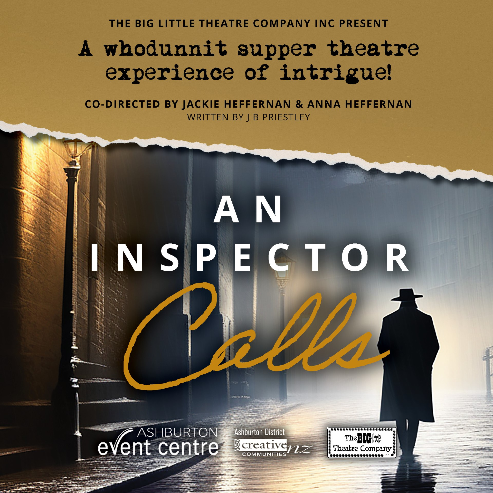
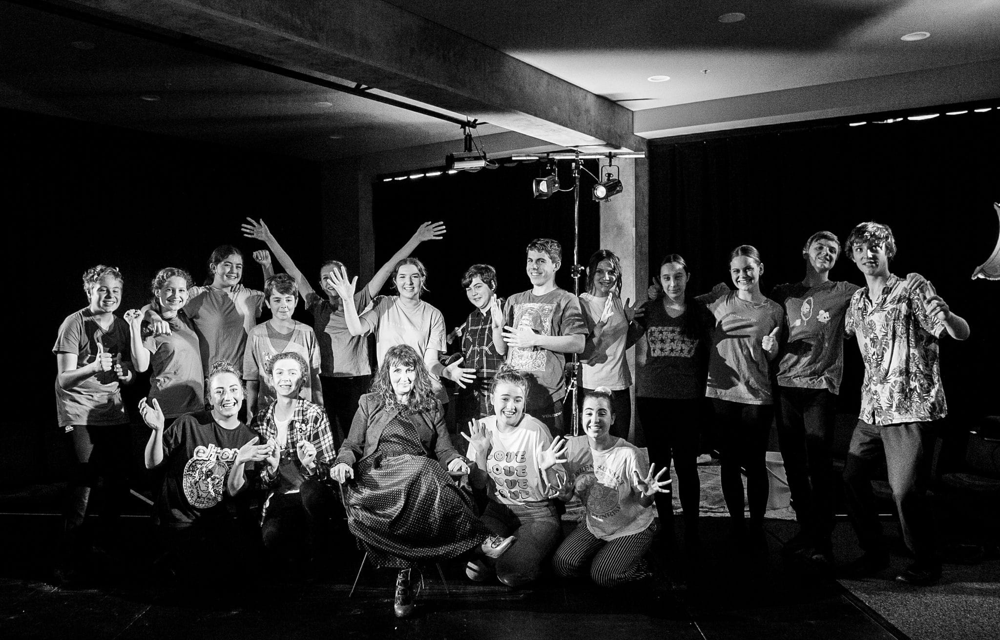

An Inspector Calls

Step into the mysterious world of An Inspector Calls, where secrets unravel and tensions mount in this gripping theatrical masterpiece. Set against the backdrop of a wealthy family's celebration of their daughter’s engagement, a pair of unexpected arrivals set off a chain of events that will leave you on the edge of your seat. With its timeless themes of morality, responsibility, and social justice, this thought-provoking play continues to captivate audiences worldwide. Join us for an unforgettable evening of drama, suspense, and intrigue in a unique theatre environment. Purchase your tickets now and experience the electrifying thrill of our "An Inspector Calls" party.
Ashburton Event Centre. April 18-20 (seated by 7pm (for supper), April 21, (seated by 2pm for afternoon tea)
Tickets available here soon
About Big Little Theatre Company:
The Big Little Theatre Company is a two-pronged Ashburton-based theatre company.
BLTC inc, is a production company which has produced well over 15 separate shows, from pantomime to Shakespeare. They have performed on The Court Theatre Stage, trained at The Globe Theatre in London, The Egg Theatre in Bath and in Stratford upon Avon with The Royal Shakespeare Company. The company's aim is quite simple – to enable all students to stand strong in their own space and to love the theatre, its power and magic for ever.
BLTC actor training meets weekly and trains young actors (aged 6 – 18) in all aspects of stagecraft, preparing them for life as well as examination and performance.
We train every Tuesday and offer a unique series of acting workshops. We also prepare students for Trinity College (London) Examinations, and have a track record of outstanding success.
Current BLTC Actor Training Tuesday schedule:
4pm – 5.30 – Junior Drama
5.30 – 6.30 – Theatre sports
6.30 – 8.30 – Senior Preparation for Performance .


For more information:
You are viewing this webpage on an iPhone. For more detailed information about the company, including past shows, please view our website on a computer or on an android phone.